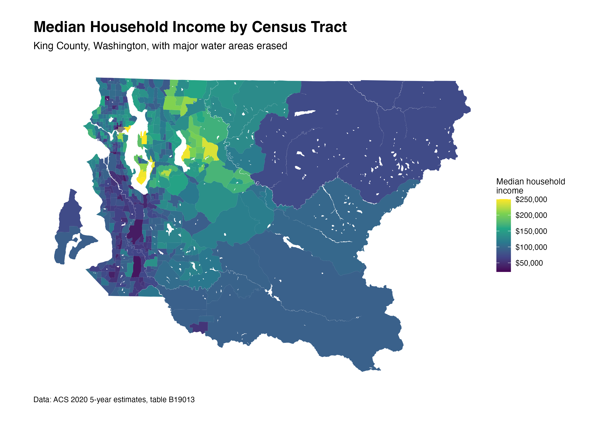
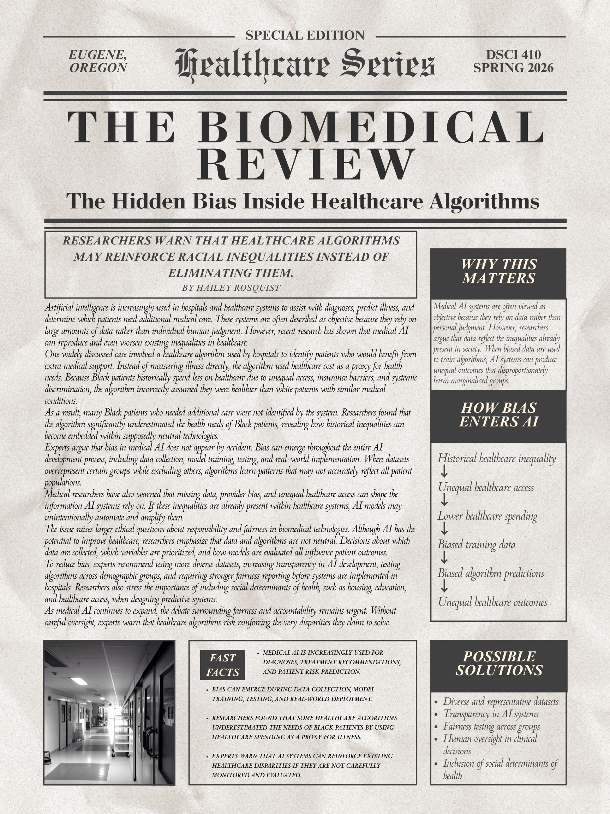

As an Operations Lead, I supervised student staff and supported daily facility operations while helping maintain a safe and welcoming environment for patrons. I coordinated opening and closing procedures, responded to emergencies, enforced facility policies, and communicated with supervisors and coworkers to solve operational challenges. I also contributed to hiring and training processes by reviewing applications, assisting with interviews, and updating staff resources. This experience strengthened my leadership, communication, accountability, and problem-solving skills.
Through geography and data science coursework, I created maps and spatial analysis projects using R, tidycensus, sf, ggplot2, and tmap. I worked with census and geographic datasets to visualize patterns related to population, race, segregation, and income in the Seattle metropolitan area. These projects required data cleaning, spatial joins, clustering analysis, and cartographic design. This work improved my technical coding abilities while also strengthening my ability to communicate complex geographic information visually.

For a data ethics course project, I researched how algorithmic bias can contribute to unequal healthcare outcomes. I focused on a real-world healthcare algorithm that underestimated the medical needs of Black patients because it used healthcare costs as a proxy for illness. I created a newspaper-style visual project and presentation explaining how historical inequality can become embedded in datasets and AI systems. This project strengthened my research, presentation, and critical thinking skills while helping me connect technical systems with ethics and social impact.
